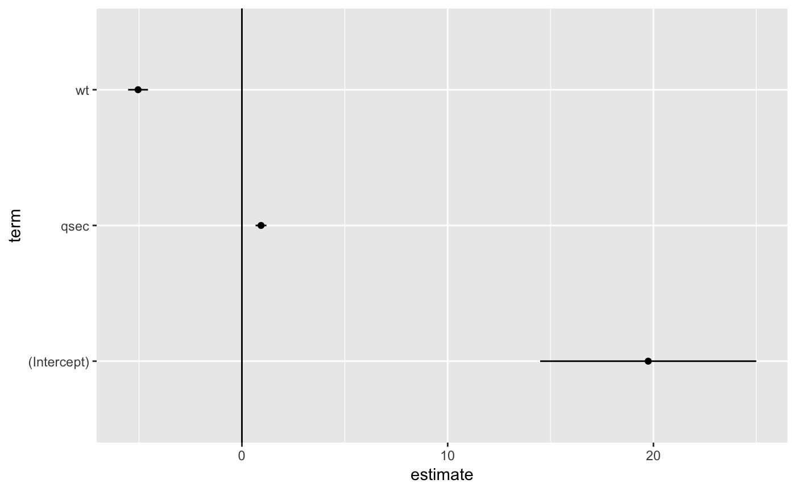
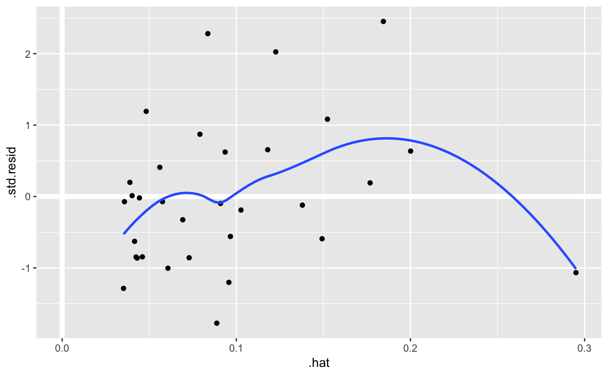
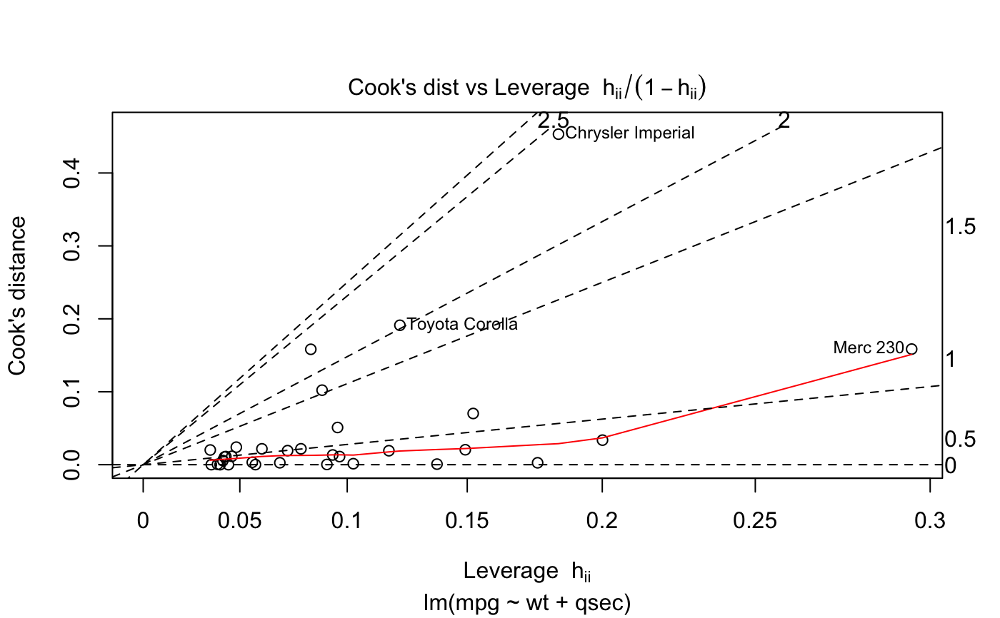
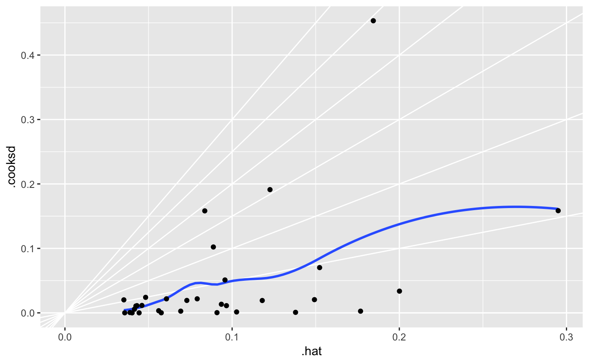

Tidy summarizes information about the components of a model. A model component might be a single term in a regression, a single hypothesis, a cluster, or a class. Exactly what tidy considers to be a model component varies cross models but is usually self-evident. If a model has several distinct types of components, you will need to specify which components to return.
# S3 method for lm tidy(x, conf.int = FALSE, conf.level = 0.95, exponentiate = FALSE, quick = FALSE, ...) # S3 method for summary.lm tidy(x, ...)
| x | An |
|---|---|
| conf.int | Logical indicating whether or not to include a confidence
interval in the tidied output. Defaults to |
| conf.level | The confidence level to use for the confidence interval
if |
| exponentiate | Logical indicating whether or not to exponentiate the
the coefficient estimates. This is typical for logistic and multinomial
regressions, but a bad idea if there is no log or logit link. Defaults
to |
| quick | Logical indiciating if the only the |
| ... | Additional arguments. Not used. Needed to match generic
signature only. Cautionary note: Misspelled arguments will be
absorbed in |
A tibble::tibble() with one row for each term in the
regression. The tibble has columns:
The name of the regression term.
The estimated value of the regression term.
The standard error of the regression term.
The value of a statistic, almost always a T-statistic, to use in a hypothesis that the regression term is non-zero.
The two-sided p-value associated with the observed statistic.
The low end of a confidence interval for the regression
term. Included only if conf.int = TRUE.
The high end of a confidence interval for the regression
term. Included only if conf.int = TRUE.
Which response column the coefficients correspond to (typically Y1, Y2, etc)
If you have missing values in your model data, you may need to refit
the model with na.action = na.exclude.
Other lm tidiers: augment.glm,
augment.lm, glance.glm,
glance.lm, tidy.glm
#> # A tibble: 3 x 5 #> term estimate std.error statistic p.value #> <chr> <dbl> <dbl> <dbl> <dbl> #> 1 (Intercept) 19.7 5.25 3.76 7.65e- 4 #> 2 wt -5.05 0.484 -10.4 2.52e-11 #> 3 qsec 0.929 0.265 3.51 1.50e- 3glance(mod)#> # A tibble: 1 x 11 #> r.squared adj.r.squared sigma statistic p.value df logLik AIC BIC #> * <dbl> <dbl> <dbl> <dbl> <dbl> <int> <dbl> <dbl> <dbl> #> 1 0.826 0.814 2.60 69.0 9.39e-12 3 -74.4 157. 163. #> # ... with 2 more variables: deviance <dbl>, df.residual <int># coefficient plot d <- tidy(mod) %>% mutate( low = estimate - std.error, high = estimate + std.error ) ggplot(d, aes(estimate, term, xmin = low, xmax = high, height = 0)) + geom_point() + geom_vline(xintercept = 0) + geom_errorbarh()augment(mod)#> # A tibble: 32 x 11 #> .rownames mpg wt qsec .fitted .se.fit .resid .hat .sigma .cooksd #> * <chr> <dbl> <dbl> <dbl> <dbl> <dbl> <dbl> <dbl> <dbl> <dbl> #> 1 Mazda RX4 21 2.62 16.5 21.8 0.683 -0.815 0.0693 2.64 2.63e-3 #> 2 Mazda RX4 W~ 21 2.88 17.0 21.0 0.547 -0.0482 0.0444 2.64 5.59e-6 #> 3 Datsun 710 22.8 2.32 18.6 25.3 0.640 -2.53 0.0607 2.60 2.17e-2 #> 4 Hornet 4 Dr~ 21.4 3.22 19.4 21.6 0.623 -0.181 0.0576 2.64 1.05e-4 #> 5 Hornet Spor~ 18.7 3.44 17.0 18.2 0.512 0.504 0.0389 2.64 5.29e-4 #> 6 Valiant 18.1 3.46 20.2 21.1 0.803 -2.97 0.0957 2.58 5.10e-2 #> 7 Duster 360 14.3 3.57 15.8 16.4 0.701 -2.14 0.0729 2.61 1.93e-2 #> 8 Merc 240D 24.4 3.19 20 22.2 0.730 2.17 0.0791 2.61 2.18e-2 #> 9 Merc 230 22.8 3.15 22.9 25.1 1.41 -2.32 0.295 2.59 1.59e-1 #> 10 Merc 280 19.2 3.44 18.3 19.4 0.491 -0.185 0.0358 2.64 6.55e-5 #> # ... with 22 more rows, and 1 more variable: .std.resid <dbl>#> # A tibble: 32 x 19 #> .rownames mpg cyl disp hp drat wt qsec vs am gear carb #> * <chr> <dbl> <dbl> <dbl> <dbl> <dbl> <dbl> <dbl> <dbl> <dbl> <dbl> <dbl> #> 1 Mazda RX4 21 6 160 110 3.9 2.62 16.5 0 1 4 4 #> 2 Mazda RX4~ 21 6 160 110 3.9 2.88 17.0 0 1 4 4 #> 3 Datsun 710 22.8 4 108 93 3.85 2.32 18.6 1 1 4 1 #> 4 Hornet 4 ~ 21.4 6 258 110 3.08 3.22 19.4 1 0 3 1 #> 5 Hornet Sp~ 18.7 8 360 175 3.15 3.44 17.0 0 0 3 2 #> 6 Valiant 18.1 6 225 105 2.76 3.46 20.2 1 0 3 1 #> 7 Duster 360 14.3 8 360 245 3.21 3.57 15.8 0 0 3 4 #> 8 Merc 240D 24.4 4 147. 62 3.69 3.19 20 1 0 4 2 #> 9 Merc 230 22.8 4 141. 95 3.92 3.15 22.9 1 0 4 2 #> 10 Merc 280 19.2 6 168. 123 3.92 3.44 18.3 1 0 4 4 #> # ... with 22 more rows, and 7 more variables: .fitted <dbl>, .se.fit <dbl>, #> # .resid <dbl>, .hat <dbl>, .sigma <dbl>, .cooksd <dbl>, .std.resid <dbl># predict on new data newdata <- mtcars %>% head(6) %>% mutate(wt = wt + 1) augment(mod, newdata = newdata)#> # A tibble: 6 x 13 #> mpg cyl disp hp drat wt qsec vs am gear carb .fitted #> * <dbl> <dbl> <dbl> <dbl> <dbl> <dbl> <dbl> <dbl> <dbl> <dbl> <dbl> <dbl> #> 1 21 6 160 110 3.9 3.62 16.5 0 1 4 4 16.8 #> 2 21 6 160 110 3.9 3.88 17.0 0 1 4 4 16.0 #> 3 22.8 4 108 93 3.85 3.32 18.6 1 1 4 1 20.3 #> 4 21.4 6 258 110 3.08 4.22 19.4 1 0 3 1 16.5 #> 5 18.7 8 360 175 3.15 4.44 17.0 0 0 3 2 13.1 #> 6 18.1 6 225 105 2.76 4.46 20.2 1 0 3 1 16.0 #> # ... with 1 more variable: .se.fit <dbl>au <- augment(mod, data = mtcars) ggplot(au, aes(.hat, .std.resid)) + geom_vline(size = 2, colour = "white", xintercept = 0) + geom_hline(size = 2, colour = "white", yintercept = 0) + geom_point() + geom_smooth(se = FALSE)#>plot(mod, which = 6)ggplot(au, aes(.hat, .cooksd)) + geom_vline(xintercept = 0, colour = NA) + geom_abline(slope = seq(0, 3, by = 0.5), colour = "white") + geom_smooth(se = FALSE) + geom_point()#># column-wise models a <- matrix(rnorm(20), nrow = 10) b <- a + rnorm(length(a)) result <- lm(b ~ a) tidy(result)#> # A tibble: 6 x 6 #> response term estimate std.error statistic p.value #> <chr> <chr> <dbl> <dbl> <dbl> <dbl> #> 1 Y1 (Intercept) 0.120 0.460 0.260 0.802 #> 2 Y1 a1 1.40 0.400 3.51 0.00987 #> 3 Y1 a2 0.00979 0.337 0.0291 0.978 #> 4 Y2 (Intercept) -0.300 0.320 -0.940 0.379 #> 5 Y2 a1 0.160 0.278 0.578 0.582 #> 6 Y2 a2 0.913 0.234 3.90 0.00589